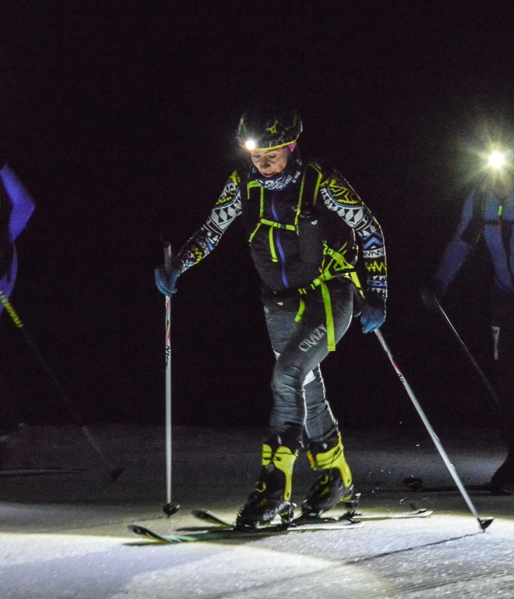
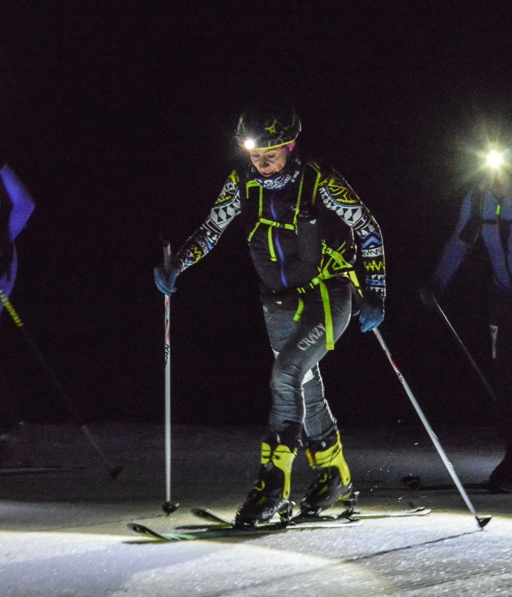

La Fogada
Vertical Race
 

"Se ami le sfide come la corsa in montagna oppure lo sci alpinismo allora la fogada fa al caso tuo."
45°48'38.7"N
10°54'50.8"E
La gara
La Fogada Vertical Race si corre sull’altopiano di Brentonico, con una salita a picco sopra l’abitato e un panaroma che spazia su tutta la Vallagarina e oltre. Il ricavato della manifestazione viene destinato all’Operazione Mato Grosso, per sostenere le attività che portano avanti presso la vicina azienda agricola sita a Piagù.


Il percorso
Il percorso è situato a Brentonico in Trentino e consiste nella risalita di un percorso lungo 4 km con un dislivello di più di 700m che porta alla croce di malga campo, questa sfida è controllata in ogni dettaglio ed è studiata e curata dallo staff per rendere unica l'esperienza di chi lo percorre.
Brentonico
1000m
3,5km

Il programma
15:00
Ritrovo presso la casetta del parco di Brentonico per il ritiro pettorali
16:15
Termine consegna sacche da trasportare all’arrivo
17:00
Partenza di gruppo a velocità controllata fino in località Fontechel; a seguire partenza ufficiale!!
17:40
Arrivo dei primi concorrenti alla croce di Malga Campo Seguirà discesa in autonomia per il rientro fino al parco di Brentonico
19:30
Cena presso la Sagra di Brentonico organizzata dalla Pro Loco Brentonico Monte Baldo e Operazione Mato Grosso
Iscrizioni annuali
0
Galleria
Clicca per vedere di più
Iscriviti
compilando il form cliccando qui sotto e potrai accedere alla gara